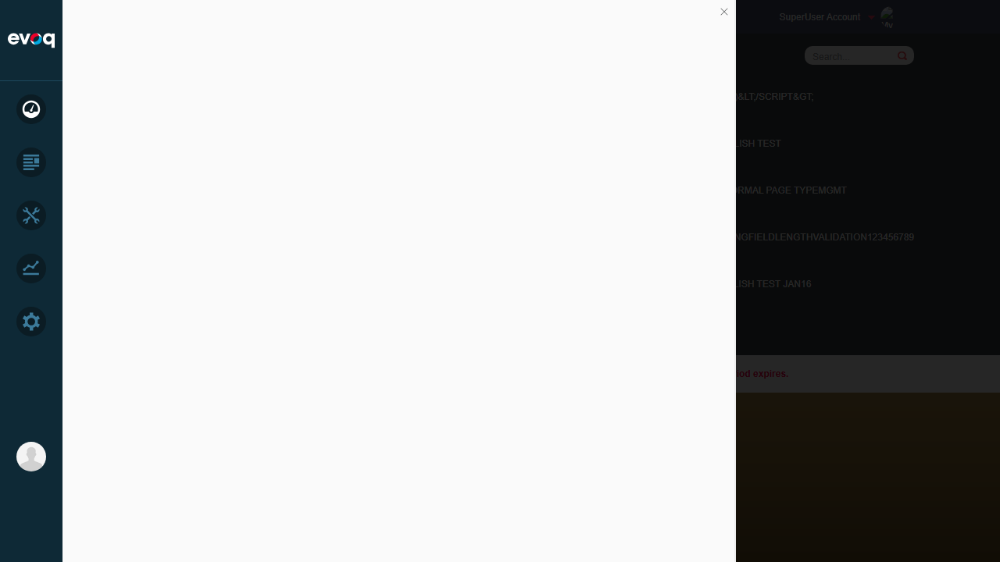
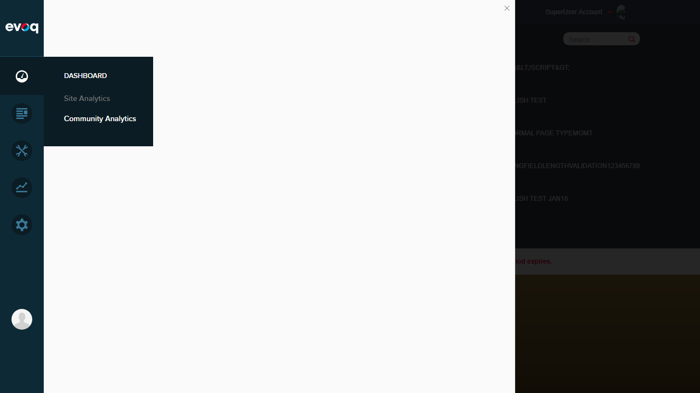

Test 1: Access Community Analytics Module FAIL
Objective: Navigate to Community Analytics to access the Ideas tab for analytics testing.
Steps Taken:
- Logged in as SuperUser (host / Pass123456)
- Hovered over Dashboard in PersonaBar
- Clicked on "Community Analytics" in the submenu
- Observed JavaScript error preventing module load
Error Encountered:
The Community Analytics module fails to initialize due to a missing function.
The Community Analytics module fails to initialize due to a missing function.
TypeError: utility.serializeCustomDate is not a function
at dashboardClass.init (social-dashboard-combined-instance.js:1025:39)
at Object.init (social-dashboard-combined.js:16:23)
at extension.js:104:32
Expected Result: Community Analytics dashboard should load with tabs for different modules including Ideas.
Actual Result: White blank screen displayed; JavaScript error prevents the module from initializing.

Screenshot 1: Logged in as SuperUser - Site Analytics visible in PersonaBar

Screenshot 2: Community Analytics shows blank panel after clicking - JavaScript error occurred

Screenshot 3: Blank panel persists after refresh - Module cannot load